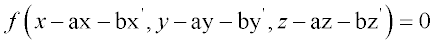
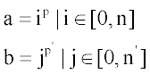

Turns the last surface into a set of identical surfaces.
Syntax
ARRAY n x y z [ n' x' y' z' ] [ EXPONENT p [ p' ] ] [ RANDOM r ] [ BOUNDS ]
X n s Y n' s' SEARCH [ k ]
Z
Y Z
X
Z X
Y
| Option | Description |
|---|
| ARRAY | elements are associated with an OBJECT |
| n n' | number of linearly spaced elements |
| x y z x' y' z' | reference point shift |
| EXPONENT | modifies reference point coefficient |
| RANDOM (or RAN) | randomize positions of individual array elements (RAN is an acceptable
abbreviation for RANDOM.) |
| p p' | reference point coefficient exponent |
| BOUNDS | treats each instance as a separate entity |
| SEARCH | Limits testing of ray intersections to elements within k
nearest neighbors |
| k | number of additional "rings" of instances about the nearest one to
consider |
Remarks
- Turns the last surface into an n+1 by n'+1 set of identical but linearly spaced
(s and s' apart) surfaces. For the first,
more general (possibly skew) syntax, the replicated surfaces are spaced according to
the equation:

- The EXPONENT option
allows the reference point coefficient to be modified as follows:

- The defaults for p and
p' are both 1.
- Positions of each element of the array
(except for the original one, i=0, j=0) can be RANDOMized a
relative amount given by the fractional part of r. The
whole/integer part of r (default 0) determines a unique random
sequence to be used.
- Each instance (that is, element) can be
optionally treated as a separate entity on a BOUNDS command.
Otherwise, if used as a base object surface, the SEARCH for any
ray intersection is restricted to the instance nearest to where the ray intersects
the plane of the array (default or k zero). SEARCH cannot be applied to an ARRAY with an ARRAY BOUNDS command.
- The k option is the
number of additional "rings" of instances about this nearest one to also consider.
For large arrays, this can speed up the trace calculation by orders of magnitude,
but runs the risk of some rays unphysically missing the object. Larger values of
k reduce this risk but slow down the trace.
Note: From ASAP, open and run the sample project, backlight.apf, located in your <ASAP install folder>\Projects\Samples\LCDbacklight.
ARRAY Examples